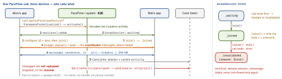

ios-platform · folio
In one line: SharePlay = your app’s activity shared over a FaceTime call or Messages
conversation (and, iOS 17, AirDrop nearby). You define a Codable GroupActivity;
one person activate()s it; the system hands a GroupSession to every participant’s
sessions() stream; each app join()s and syncs through AVPlayer’s playback coordinator
(media), GroupSessionMessenger (small messages) or GroupSessionJournal (files). All
session data is end-to-end encrypted; there is no server of yours in the loop.
Download PDF Print view LaTeX source


How it works
- Capability: Group Activities → entitlement
com.apple.developer.group-session. Framework since iOS 15 / macOS 12 / tvOS 15 / visionOS 1. - Activity =
struct: GroupActivity(Codable, sent to every device) withstatic activityIdentifier(needed once you have several types) andmetadata:title,subtitle,previewImage(CGImage),fallbackURL(join from a web browser),type(.watchTogether,.listenTogether,.playTogether,.createTogether, … iOS 17 added shop/read/learn/workout),supportsContinuationOnTV. - Start:
GroupStateObserver().isEligibleForGroupSession(ObservableObject) — true in a call/conversation.prepareForActivation()asks the user:.activationPreferred→activate()·.activationDisabled→ do it locally ·.cancelled→ nothing. Not eligible → presentGroupActivitySharingController(iOS 15.4): it invites people and starts the call. - Share sheet / AirDrop:
ShareLink(item: activity, …)with aTransferableactivity; UIKit:NSItemProvider.registerGroupActivity(_:)(15.4) inUIActivityViewControlleror a responder’sactivityItemsConfiguration— the latter is what SharePlay over AirDrop (iOS 17) finds. - Receive on every device, including the starter:
for await s in X.sessions()from launch (e.g..taskon the root view). Store it, build UI + sync objects, thenjoin(). - Change content: set
session.activity(@Published, only when.joined); everyone observes$activityand loads the same item. - Also on the session:
isLocallyInitiated(am I the starter?),requestForegroundPresentation()(the activity needs your app on screen).
Example — watch together + reactions
struct WatchTogether: GroupActivity {
let movie: Movie // Codable payload
var metadata: GroupActivityMetadata {
var m = GroupActivityMetadata(); m.type = .watchTogether
m.title = movie.title; m.fallbackURL = movie.webURL; return m }
}
func start(_ a: WatchTogether) async throws { // Alice's tap
switch await a.prepareForActivation() {
case .activationPreferred: _ = try await a.activate()
case .activationDisabled: playLocally(a.movie)
default: break } // .cancelled
}
for await s in WatchTogether.sessions() { // every device
session = s; load(s.activity.movie) // keep strong refs
player.playbackCoordinator.coordinateWithSession(s)
messenger = GroupSessionMessenger(session: s, deliveryMode: .unreliable)
s.join()
Task { for await (r, ctx) in messenger.messages(of: Reaction.self) {
show(r, from: ctx.source) } } // ctx.source: Participant
}Three sync channels
| Channel | Carries | Watch out |
|---|---|---|
AVPlayer .playback Coordinator (15) | rate, time, pause, seek — intercepted and imposed on the others | does not manage the queue; stalls/interruptions suspend coordination |
GroupSession Messenger (15) | your Codable/Data to .all or .only(p);
≤ 256 KB; .reliable (default) or .unreliable (16, UDP) | live traffic only — no history for late joiners |
GroupSession Journal (17) | Transferable files: add, attachments, load | available to everyone whenever they joined; not for fast messages |
Local detour: let s = player.playbackCoordinator.beginSuspension(for: …) — rewind or 2× for yourself, s.end() rejoins the group’s time. Same movie, different URLs per device (CDN, locale)? AVPlayerPlaybackCoordinatorDelegate playbackCoordinator(_:identifierFor:) returns a shared id.
Privacy and platforms
- E2E encrypted; Apple sees neither content nor playback events, nor your app’s identity.
Participant.idis aUUID, no personal data — map people to accounts yourself. - iOS 26:
Participant.isNearbyWithLocalParticipant(same room vs remote). visionOS: spatial Personas,session.systemCoordinator,SpatialTemplatefor seating; visionOS 26 shares with people nearby.
Traps
activate()with no call/conversation fails — check eligibility, fall back toGroupActivitySharingControlleror the share sheet.- The coordinator syncs time, not which item: drive item changes through
session.activity, or players drift to different movies. - Late joiner sees an empty canvas: the messenger never replays. Diff
$activeParticipants, send a snapshot to.only(new)— or keep state in the Journal. .unreliableis best-effort: cursors and drags, never moves or scores..invalidatedis terminal: drop the session, messenger and tasks.join()only once your UI can show the activity.- “SharePlay needs my backend” — no: FaceTime’s infrastructure relays it; you only need content every device can load.